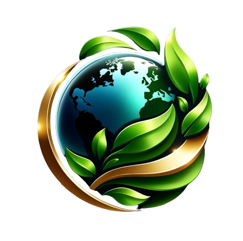

AKAIMO GLOBE
Benvenuto, Ospite!
Seguici sui nostri social akaimo_globe
La cura del nostro pianeta non è mai stata così importante come ora. In AKAIMO GLOBE, ci dedichiamo a fornire servizi innovativi e sostenibili che contribuiscono alla salvaguardia dell'ambiente. La nostra missione è aiutare individui, comunità e aziende a compiere scelte eco-consapevoli che guidino verso un futuro più verde e pulito.
I nostri servizi:
Raccolta e Riciclo Rifiuti: Il nostro servizio di gestione dei rifiuti non è solo efficiente; è intelligente. Con sistemi all'avanguardia, garantiamo che ogni pezzo di rifiuto raccolto venga trattato nel modo più sostenibile possibile, maximizzando il riciclo e la riduzione dell'impatto ambientale.
Consulenza Ambientale: Forniamo expertise e consulenza per aiutare le aziende a ridurre la loro impronta ecologica. Dalla pianificazione strategica alla formazione del personale, lavoriamo con voi per implementare le migliori pratiche ambientali nel vostro ambiente di lavoro.
Energia Rinnovabile: Investiamo nella ricerca e promuoviamo l'adozione di fonti di energia rinnovabile. Il nostro obiettivo è aiutare la transizione verso un'economia a basse emissioni di carbonio, sostenendo l'installazione e l'utilizzo di soluzioni energetiche pulite.
Educazione Ambientale: Crediamo nell'istruzione come forza motrice del cambiamento. Organizziamo workshop, seminari e programmi educativi per sensibilizzare su questioni ambientali e insegnare pratiche sostenibili da adottare nella vita quotidiana.
In AKAIMO GLOBE, l'innovazione incontra l'ambiente. Unitevi a noi nel nostro viaggio per un mondo più sano, pulito e sostenibile. Per saperne di più sui nostri servizi o per iniziare la vostra transizione verso la sostenibilità, contattateci oggi stesso.